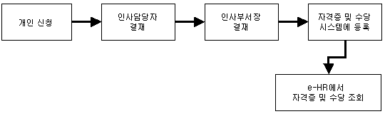
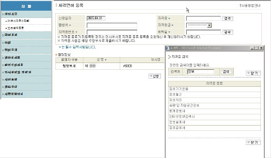

|
개요 및 신청절차 | |
 |
개요 | |
| 개인이 자격증을 취득하면 Global HR Portal에 등록하고, 인사담당자, 인사부서장의 결재를 득한 후 시스템에 등록된다. 자격수당을 지급받는 자격증의 경우에는 자격증이 급여에 반영되며, 자격증 및 자격수당 정보는 개인이 HR Center에서 조회한다. | ||
|
절차 | |
|  | ||
 |
화면사용법 및 유의사항 | |
| <그림 1. 자격면허등록 화면> | ||
|  | ||
| 1) 취득한 자격증을 등록하기 위해, 자격증, 자격등급, 발행처, 자격증 번호, 취득일을 입력한다. | ||
| 2) 자격증을 입력할 때는 "검색" 버튼을 클릭하여 keyword를 입력하고 엔터키를 친 후 관련 List가 나타나 | ||
| 면 해당 자격증을 선택한다. | ||
| 3) 자격증 사본을 아래 결재정보의 담당부서 담당자에게 발송한다. 담당부서장까지 결재를 득하면 | ||
| "인사정보>개인사항"의 자격면허 조회에서 자격증 등록사항 및 자격수당(수당이 지급되 | ||
| 는 자격증에 한함)을 확인할 수 있다. | ||
| 4) 제출서류 : 자격증 사본 | ||